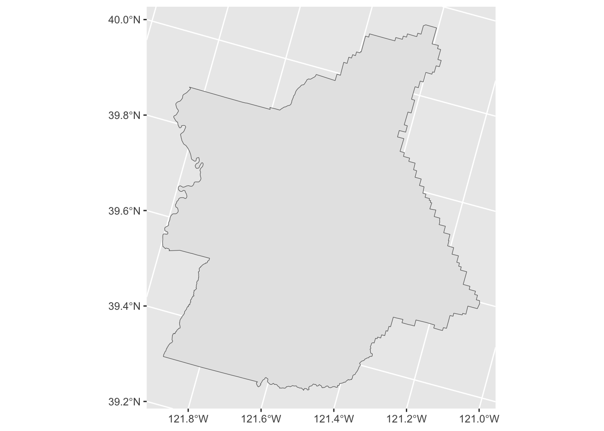
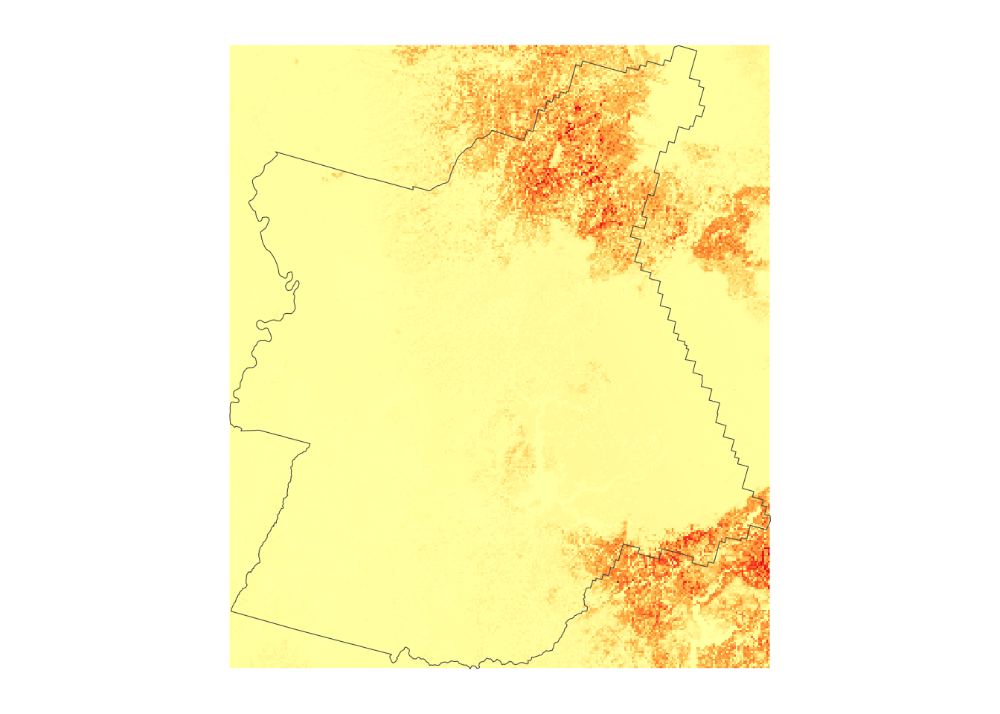
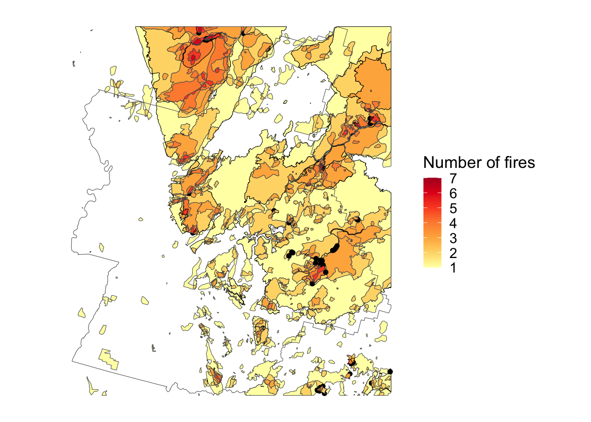

pacman::p_load(tidyverse, sf, cowplot, raster, scales, tigris)
# Set some knitr options
knitr::opts_knit$set(message = F, warning = F)
# Load WHP raster (270m that covers the entire U.S., there is also a 30m version that is split up by state but those files are much larger)
# Source: https://www.fs.usda.gov/rds/archive/catalog/RDS-2015-0047-4
whp <- raster("~/Downloads/Data/whp2023_GeoTIF/whp2023_cnt_conus.tif")
NoteUpdates
- Updated 2025-11-24 to reload WHP 2023 data and fix broken links. (Note that this actually changes the visual relationship between WHP and historical fires somewhat, since the 2023 data reflects more recent landscape changes.)
I like making maps and thinking about wildfires. For a recent project examining the implicit subsidy of wildfire suppression (joint with the inimitable Judson Boomhower), we used Wildfire Hazard Potential (WHP for short) maps from the U.S. Forest Service as a measure how likely various areas were to catch on fire.
Today, I got to thinking: how much do these WHP maps predict actual wildfire? And, can I make some maps to help visualize this? I should say here that I am guilty of loving maps, possibly too much, and one of my favorite packages in R is sf, which has — in my view — absolutely revolutionized spatial analysis in R. I don’t think enough people know just how easy sf makes this kind of mapping. Let’s dig in.
First, some preliminaries: load sf and a number of other helper packages. Using the raster package, I load the WHP raster downloaded from the link above. (Note: to run this code yourself, you’ll need to download the relevant files and put them in a directory where the code can access them.)
Butte County, CA
For this “analysis”, I’m going to focus on Butte County, which is a bit north of Sacramento in northern California and contains a number of small towns that have, sadly, been hard-hit by wildfire in the last few decades. The most recent example of this was the devastating 2018 Camp Fire. To focus on Butte, I load a county shapefile — notice how easy sf makes it to quickly filter to Butte and to reproject to match the WHP raster. It also interfaces very well with ggplot2, part of the tidyverse that we loaded earlier.
butte <- counties(state = "CA", year = 2019, cb = TRUE, progress_bar = FALSE) %>%
filter(GEOID == "06007") %>%
st_transform(proj4string(whp))
ggplot(butte) + geom_sf()
Wildfire Hazard Potential in Butte
The next step is to crop the WHP raster to Butte. This, too, is easy, since raster now plays nicely with sf. We can then plot the result.
whp <- crop(whp, butte)
plot(whp)
But, we’d rather do our raster plotting using ggplot. This is easy as well — we simply convert the raster to a data.frame (often called “fortifying” the raster) and add it to our original Butte County plot.
whp_df <- as.data.frame(whp, xy=TRUE)
ggplot(butte) +
geom_raster(data = whp_df, mapping = aes(x = x, y = y, fill = Band_1)) +
geom_sf(fill = NA) +
scale_fill_distiller(palette = "YlOrRd", direction = 1) +
guides(fill = "none") +
theme_map()
History of wildfires in Butte County
The next step is to see where wildfires have occurred and re-occurred in Butte over the years. To do this, we’ll load another data source: historic fire perimeters from CAL FIRE. This history runs all the way back to 1878 until the present day, although data sparsity varies over that time period. Still, we should be able to use it to get a rough sense for where, historically, fires have occurred. We’ll load the perimeters and, like the WHP raster, crop them to Butte County.
# Source: https://www.fire.ca.gov/what-we-do/fire-resource-assessment-program/fire-perimeters
perims <- st_read("~/Downloads/fire24_1.gdb/", layer = "firep24_1")
perims_butte <- perims %>%
st_cast("MULTIPOLYGON") %>% # Avoid Unknown WKB type 12 error
st_make_valid() %>% # Fixes other possible errors
st_transform(st_crs(butte)) %>%
st_crop(butte)You’ll see that there are a few more lines of code before we crop. Sometimes shapefiles will have one error or another that need to be resolved before we can do operations like cropping. In this case, there are two issues: one is that there’s a funny polygon type in the original shapefile, and two is that a small number of these polygons are invalid. Without going deep into these issues, we fix the first by “casting” the funny polygon to a multi-polygon type that sf knows how to handle, and the second by using a function to patch invalid polygons. Once we’ve done that, we can again reproject to match our other spatial objects and crop to Butte.
The next step is to count the number of overlapping fire areas in the county. Here we’ll use a neat (and frankly not very well-documented) trick: st_intersection, an sf function, can figure out where polygons overlap and how many of them overlap in each place. This is a little time-consuming, but once it’s done we can sort the overlaps by their number (from least to most) and plot with ggplot.
perims_butte_overlaps <- st_intersection(perims_butte) %>%
arrange(n.overlaps)
ggplot(butte) +
geom_sf(data = perims_butte_overlaps, aes(fill = n.overlaps)) +
geom_sf(fill = NA) +
scale_fill_distiller(name = "Number of fires", palette = "YlOrRd", direction = 1) +
theme_map()
There’s a couple things to note here. First, even historically, fire does not strike the same areas many times over. This is likely because once an area has burned in a significant way, it takes a number of years before there’s enough fuel built back up that it can burn again. The second is that, visually speaking, the historical pattern of fires doesn’t look all that similar to the wildfire hazard potential map. But we can go another step further here to see this a bit more clearly: we can combine the two maps.
To combine the two maps, we have to decide which one to plot with color and which to plot some other way. In this case, I’ve chosen to stick with the original coloring for WHP and use transparency to represent the number of fires in each area.
ggplot(butte) +
geom_raster(data = whp_df, mapping = aes(x = x, y = y, fill = Band_1)) +
geom_sf(data = perims_butte, fill = "black", colour = NA, alpha = 0.25) +
geom_sf(fill = NA) +
scale_fill_distiller(palette = "PuBuGn", direction = 1) +
guides(fill = FALSE) +
theme_map()Warning: The `<scale>` argument of `guides()` cannot be `FALSE`. Use "none" instead as
of ggplot2 3.3.4.
You can see that, in Butte County at least, there isn’t much of a relationship between hazard potential and actual historical fire. Some low hazard potential areas have been hit by fires many times over, and some high potential areas have never been hit. But this is very likely mixing up cause and effect: the WHP (wildfire potential) map is built with landscape characteristics that reflect 2020 conditions, so only a couple of years after the devastating Camp Fire. Areas that have burned recently are likely to have lower hazard potential because there’s less fuel to burn. To really assess how well WHP predicts fire, we’d need to look at how well it predicted fire before the map was made. A project for another day.
That’s it for now. Hopefully this has given you a sense for some of the capability — and relative simplicity! — of spatial work in R. Happy mapping!